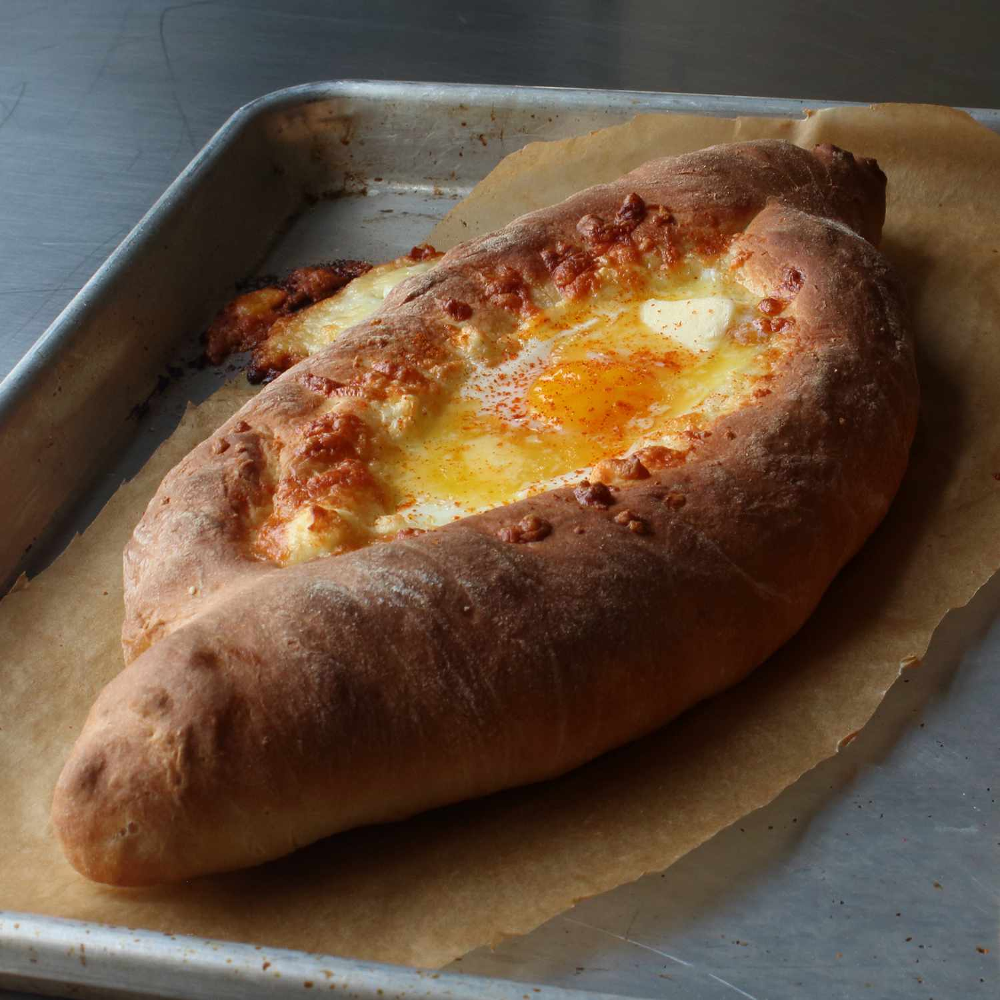

Khachapuri
Home

Description
Ajarski khachapuri is a boat-shaped Georgian bread with a cheese-stuffed crust and an egg baked into the center.
It's only a matter of time before this fun bread is delivered to every home for pizza night and ordered from
every brunch menu the morning after. This versatile bread takes a little finesse, but the payoff is well worth
it; after all, what more could you want other than cheesy, soft, chewy bread dipped in runny yolk and molten
cheese?
Ingredients
Dough:
- ½ cup warm milk
- ⅓ cup warm water
- 1 (.25 ounce) package active dry yeast
- 1 ½ teaspoons white sugar
- 2 ¼ cups all-purpose flour, or more as needed, for dusting
- 2 teaspoons olive oil
- 1 ½ teaspoons kosher salt
Cheese Blend:
- 8 ounces feta cheese, crumbled
- 4 ounces Monterey Jack cheese, shredded
- 4 ounces low-moisture mozzarella cheese, shredded
Filling:
- 2 large eggs
- 1 tablespoon butter, cut into 4 pats
- Sea salt to taste
- 1 pinch cayenne pepper, or to taste (Optional)
Steps:
- Make dough: Combine milk, water, yeast, and sugar in a large bowl. Let stand until yeast forms a creamy
foam, about 5 minutes. Add 2 cups flour, olive oil, and salt; mix until a sticky dough forms.
- Turn dough out onto a floured surface. Knead for about 3 minutes, adding in remaining 1/4 cup flour as
needed, until dough is very soft but still workable. Form into a ball and place in a lightly oiled bowl.
Cover and let rise in a warm spot until doubled in volume, 1 to 1 1/2 hours.
- Preheat the oven to 475 degrees F (245 degrees C).
- While dough rises, prepare cheese blend: Toss together feta, Monterey Jack, and mozzarella cheese in a
medium bowl. Refrigerate cheese mixture until needed.
- Punch down dough and turn out onto a floured surface. Flatten slightly and cut in half. Place 1 dough half
on a sheet of parchment paper dusted with flour. Roll out into a rectangle about 1/8- to 1/4-inch thick.
- Arrange 1/4 of the cheese mixture in 2 rows, 1 to 2 inches from the longest sides. Roll sides up tightly
over cheese, forming a canoe shape. Pinch and twist ends to seal. Trim excess parchment and lift dough onto
a baking sheet. Shape and stuff remaining dough half. Fill canoes with remaining cheese mixture.
- Bake in the preheated oven for 15 minutes. Form a well in the center of each khachapuri using a spoon; crack
an egg inside each well.
- Return to the oven and bake until eggs are mostly set, 3 to 4 minutes. Place 2 pats butter over each egg,
then sprinkle with salt and cayenne. Plate khachapuri; tear off one end and use it to stir butter into egg.